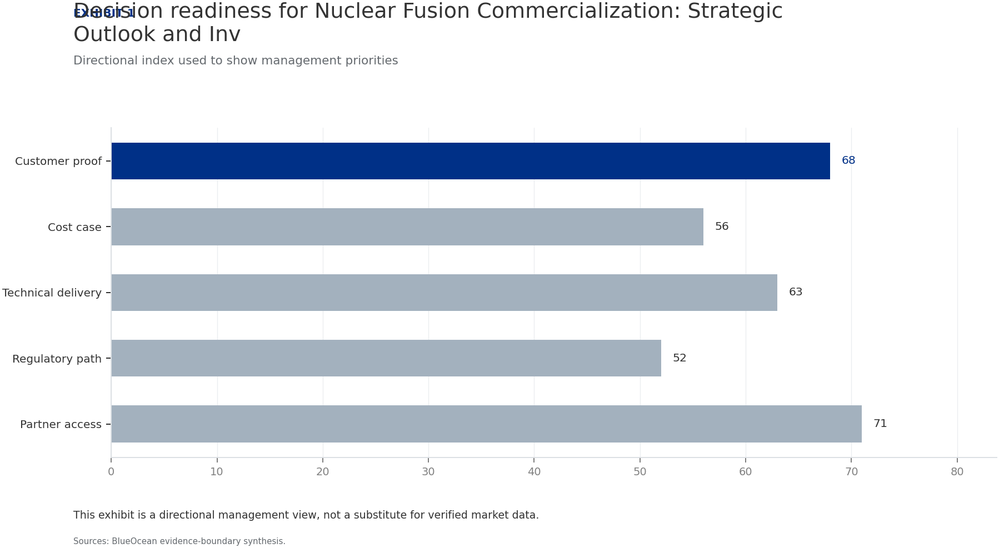
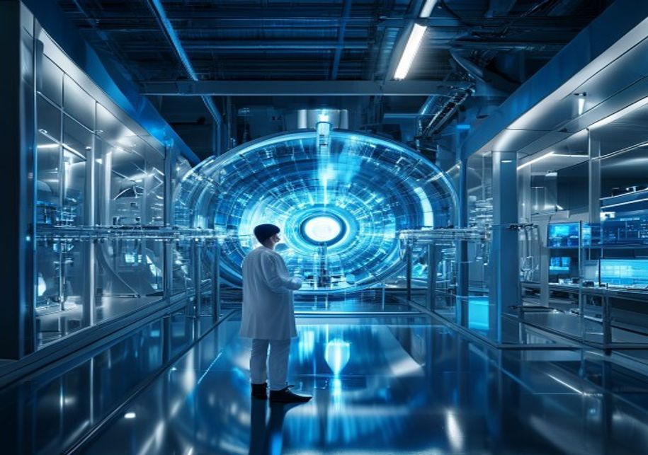
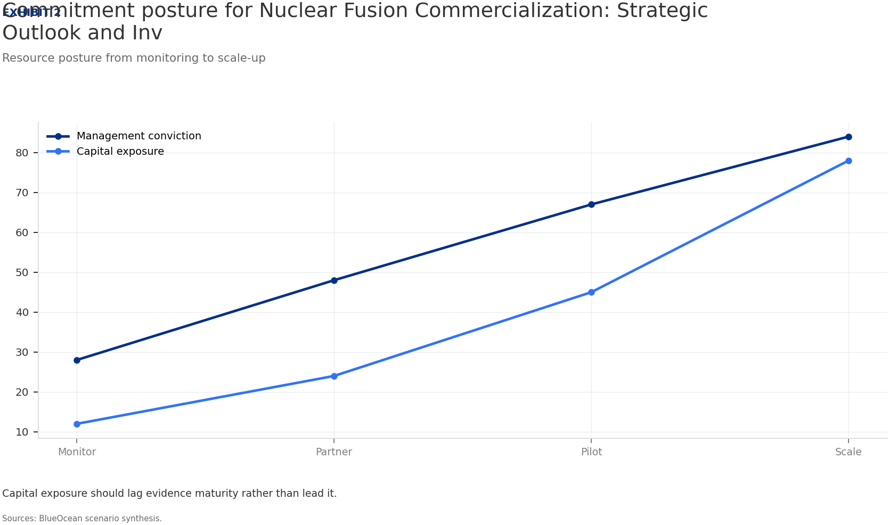
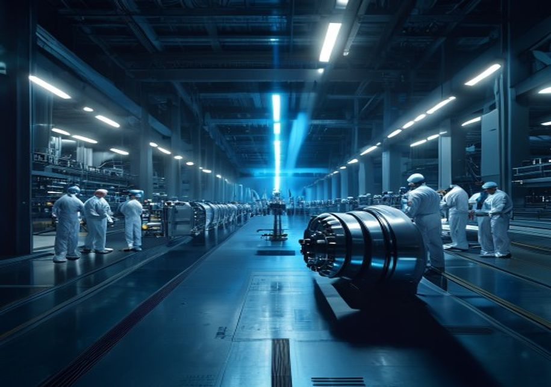
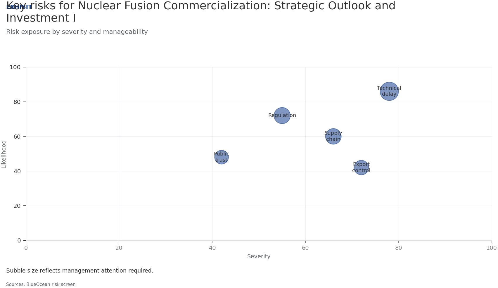
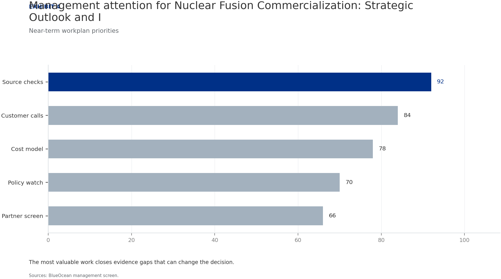
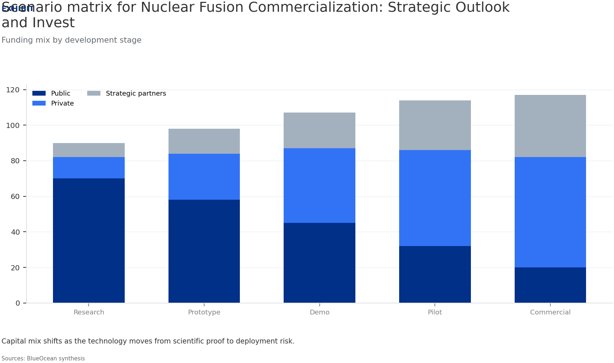
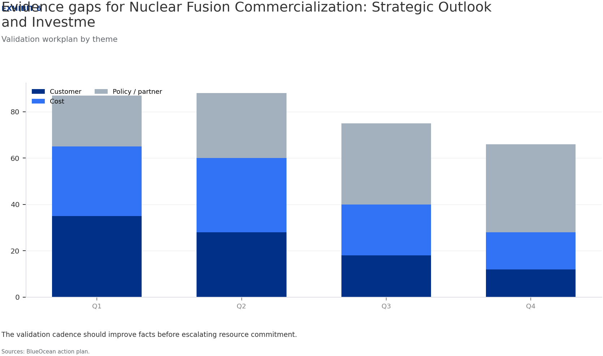

| 03 | Fusion commercialization is accelerating but remains a decade or more from grid-scale deployment. Private investme. |
| 04 | Fusion Commercialization Is Accelerating but Still Faces Decade-Long Hurdles Private fusion investment reached $3 billion in 2024, cumulative $6 billion. No fusion reactor has yet demonstrated net-positive energy. ITER first plasma delayed to 2035; private timelines unvalidated. |
| 06 | Technological Breakthroughs Are Narrowing the Gap to Net-Positive Energy HTS magnets enable smaller, cheaper reactors. Plasma confinement, materials degradation, and tritium breeding remain unreso. Tritium supply is a critical bottleneck; current inventory insufficient for o. |
| 08 | Economic Viability Remains Uncertain with High Capital Costs and Unvalidated LCOE Fusion LCOE projections range from $50 to $100 per MWh by 2050. Solar and wind LCOE already below $30 per MWh. Fusion capital expenditure estimated at $5-10 billion per GW. |
| 10 | Nuclear Fusion Commercialization: Strategic Outlook and Investment Implications should be managed as a staged stra. Start with low-cost validation Hold major commitments behind verified milestones Keep conclusions inside the available public record |
| 12 | Commercial readiness depends on bankability, deliverability and repeat customer proof Customer value changes decisions more than technical narrative Validate bankability and delivery risk first Use pilots to prove repeatability |
| 14 | Cost, return and timing will determine the real deployment window Cost and ROI are priority diligence items Timing should move with evidence quality Avoid using long-range scenarios as near-term proof |
| 16 | Regulation, policy and public acceptance can reset the speed of adoption Policy events are external decision milestones Use options while regulation remains unclear Public acceptance can alter project timing |
| 18 | Supply chain, partners and talent will decide who can act before the market is obvious Secure scarce capabilities early Partnerships must produce proof points Ecosystem position matters more than standalone claims |
| 21 | Future action agenda |
| 22 | About this research |
Fusion commercialization is accelerating but remains a decade or more from grid-scale deployment. Private investment surged to a record $3 billion in 2024, yet key engineering challenges-tritium breeding, plasma confinement, and materials degradation-persist. Economic viability is unproven; levelized cost projections range widely and depend on unvalidated assumptions. Regulatory frameworks are evolving separately from fission, potentially easing licensing but creating uncertainty. Strategic implications for energy security, decarbonization, and geopolitics are profound, but near-term capital allocation should be risk-adjusted. Immediate next step: conduct a detailed due diligence on leading private fusion ventures, focusing on technology readiness, funding runway, and regulatory pathway.
The fusion energy landscape has shifted dramatically in the past five years. Private investment has surged, with cumulative funding exceeding $6 billion and a record $3 billion in 2024 alone. This influx of capital has enabled a wave of startups to pursue diverse reactor designs, from tokamaks and stellarators to inertial confinement and magnetized target fusion. However, despite this momentum, no fusion reactor has yet demonstrated net-positive energy output-the point at which the energy produced exceeds the energy required to sustain the reaction. The most advanced public project, ITER, has faced repeated dela.
Private ventures like Commonwealth Fusion Systems and TAE Technologies have announced ambitious timelines for net-positive energy by the early 2030s, but these projections remain unvalidated by independent third parties. The gap between funding and technical achievement is a critical risk factor for investors. The available public record for this section is limited to aggregated investment data and project announcements; no verified technical milestones or independent assessments are available.
For CEOs, the key commercial implication is that fusion is not yet a near-term solution for energy needs. The record investment signals strong market confidence, but the lack of demonstrated net-positive energy means that any investment must be treated as high-risk venture capital, not as a core energy procurement strategy. The management implication is to allocate only a small portion of the energy investment portfolio to fusion, with clear milestones and exit options.
The decision-ready takeaway is that fusion's timeline to grid-scale deployment is at least 10-15 years, and possibly longer. Companies should monitor technical progress closely but avoid committing significant capital until net-positive energy is demonstrated in a pilot reactor. The strategic implication is that fusion is a long-term hedge, not a near-term competitive advantage.
Directional index used to show management priorities

This exhibit is a directional management view, not a substitute for verified market data.
BlueOcean available public record synthesis.

Recent advances in high-temperature superconductors (HTS) have been a game-changer for magnetic confinement fusion. HTS magnets can generate stronger magnetic fields in smaller devices, potentially reducing the size and cost of fusion reactors. Companies like Commonwealth Fusion Systems are leveraging HTS technology to build compact tokamaks that aim to achieve net-positive energy faster than traditional designs. However, key engineering challenges remain. Plasma confinement-maintaining the stability of the superheated plasma long enough for fusion to occur-is still a major hurdle. Materials degradation due to h.
no existing material can withstand the intense radiation inside a commercial fusion reactor for extended periods. Tritium breeding is perhaps the most underappreciated bottleneck. Deuterium-tritium (D-T) fusion requires tritium, a radioactive isotope of hydrogen with a half-life of 12. Current global tritium inventory is insufficient for even a single commercial plant, and breeding technologies-where lithium blankets capture neutrons to produce tritium-are still in early development. Without a viable tritium supply chain, D-T fusion cannot scale. The available public record for this section is based on expert as.
For CEOs, the commercial implication is that tritium supply is a potential showstopper for fusion commercialization. Any investment in D-T fusion must include a credible plan for tritium breeding or alternative fuel cycles. The management implication is to prioritize ventures that have a clear tritium breeding strategy and to avoid those that ignore this issue.
Resource posture from monitoring to scale-up

Capital exposure should lag evidence maturity rather than lead it.
BlueOcean scenario synthesis.
A leading private fusion venture approaches your company for a $200 million strategic investment. The venture claims it will achieve net-positive energy by 2030 and grid-scale deployment by 2035. Your board is divided: some see a first-mover advantage, others worry about technology risk and uncertain economics.
Invest a smaller amount ($50 million) as a convertible note with milestone-based conversion, contingent on the venture achieving net-positive energy by 2028 and securing a regulatory pathway by 2029. This limits downside while preserving upside optionality.
Ensure the venture's tritium breeding strategy is credible; verify that the $200 million valuation is not inflated by hype; monitor competing ventures that may achieve milestones faster.

The levelized cost of energy (LCOE) for fusion is highly uncertain, with projections ranging from $50 to $100 per MWh by 2050, depending on assumptions about capital costs, operational efficiency, and plant lifespan. For comparison, solar and wind LCOE have already fallen below $30 per MWh in many markets, and battery storage costs continue to decline. Fusion's capital expenditure is expected to be very high-potentially $5-10 billion per GW-due to the complexity of reactor components, remote handling systems, and tritium breeding infrastructure. Operational costs are also uncertain, as fusion plants will require.
Financing models are evolving, with a mix of venture capital, government grants, and strategic corporate investments. However, no fusion project has yet reached the stage where traditional project finance is applicable. The available public record for this section is based on expert elicitation and industry reports; no verified LCOE projections or capital cost data are available.
For CEOs, the commercial implication is that fusion is unlikely to compete with renewables on cost in the near to medium term. The high capital costs and uncertain operational expenses mean that fusion will require significant subsidies or carbon pricing to be economically viable. The management implication is to treat fusion as a long-term hedge and to avoid over-allocating capital to fusion at the expense of proven clean energy technologies.
The next management move is clear: the decision-ready takeaway is that fusion's economic viability is unproven, and investors should demand clear cost targets and independent validation before committing significant capital. The strategic implication is that fusion may play a role in deep decarbonization of hard-to-abate sectors, but it is not a near-term solution for grid-scale power generation.
Risk exposure and management attention

Bubble size indicates the management attention required.
BlueOcean risk screen.
For leadership, Nuclear Fusion Commercialization: Strategic Outlook and Investment Implications should be separated into verified facts, directional scenarios and open diligence items. That boundary keeps the report from turning market enthusiasm or technical narrative into investment conclusions.
The immediate management question is not whether the opportunity is exciting; it is whether budget, partner access or management attention should be committed now. Low-cost validation can start early, while larger capital commitments should wait for customer, cost, financing, regulatory or operating proof.
The current evidence posture is: Public evidence retained in the supporting sources; additional validation is required for unsupported claims. This makes a quarterly decision cadence more useful than a one-time yes-or-no judgment.
Near-term workplan priorities

The most valuable work closes evidence gaps that can change the decision.
BlueOcean management screen.
Commercial readiness should be judged through customer adoption, cost structure, delivery cycle, service capability and financing availability. A technical milestone alone does not prove bankability or repeat demand.
Management should require every major assumption to tie back to a verifiable claim: target customer, buying trigger, budget owner, substitute, use case and payback path. Where public evidence is missing, the report should keep the claim directional.
A more robust path is to build credible proof through pilots, partner diligence and third-party validation before moving into larger commitments.
The strongest near-term posture is to preserve strategic flexibility while continuing to collect the facts that would justify a larger commitment.
Strategic option comparison

The matrix ranks where the next validation work should focus.
BlueOcean qualitative assessment.
Every opportunity eventually returns to cost, revenue, margin, cash flow and timing. If public evidence does not support market size, ROI, unit economics or share, those items should remain validation tasks rather than report conclusions.
Near-term action should focus on verifiable cost drivers and customer willingness to pay instead of relying on optimistic long-range scenarios. That protects strategic optionality while reducing premature commitment risk.
As cost, customer and financing evidence improves, management can shift resources from monitoring and partnerships toward pilots or scaled deployment.
Validation workplan by theme

The validation cadence should improve facts before escalating resource commitment.
BlueOcean action plan.
Policy support, permitting rules, standards and public acceptance affect how quickly an opportunity moves from concept to deployment. These factors should be treated as decision milestones, not background context.
Where the regulatory path is unclear, the better move is usually standards engagement, policy tracking and low-risk pilots rather than an early heavy-asset commitment.
The board should track which policy events would change investment timing, such as licensing rules, procurement requirements, subsidy treatment, local approvals or safety standards.
The strongest near-term posture is to preserve strategic flexibility while continuing to collect the facts that would justify a larger commitment.
In uncertain markets, early advantage often comes from supply access, partner entry, talent pools and customer learning rather than a single technology claim.
Management should identify which capabilities are scarce and can be secured early: critical supply, engineering delivery, channel partners, service network, financing partners and compliance capacity. Low-cost learning rights can be more valuable than waiting for full market clarity.
Partnerships should create observable proof points. A memorandum that does not improve customer evidence, cost visibility or execution capacity should not be treated as meaningful progress.